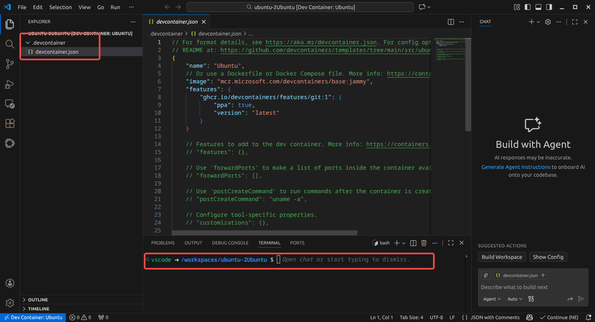

DevContainer 构建ROS2 仿真环境
在做机械臂时用ROS2 需要Ubuntu 的环境，而自己的机器时LMDE，好在现在VSCode 支持DevContainer，可以直接在docker 镜像中做开发，省去了环境配置中的各种坑，救了老命了。
首先需要将当前用户添加到docker 用户组，这样就不用每次通过sudo 启动docker 了：
sudo usermod -aG docker user_name标准环境建立过程
- 安装打开VSCode，点击左下角远程连接的按钮；
- 选择
New Dev Container； - 选择预定义模板，以
Ubuntu为例； - 选择额外选项（可选）：
- 版本号：
jammy - 特性：
Git：保持默认配置
- 版本号：
- 完成（等待一段时间拉取镜像）。
VSCode 就会帮我们创建好了一个Ubuntu 的环境。
文件结构如下：

其配置如下：
{
"name": "Ubuntu",
// 镜像可以用链接，也可以用Dockerfile 等
// More info: https://containers.dev/guide/dockerfile
"image": "mcr.microsoft.com/devcontainers/base:jammy",
"features": { // 启用git 特性
"ghcr.io/devcontainers/features/git:1": {
"ppa": true,
"version": "latest"
}
}
// ...
}ROS2 配置文件
要求工作区文件结构如下：
ros_ws
├── .devcontainer
│ ├── devcontainer.json
│ └── Dockerfile
├── src
├── package1
└── package2devcontainer.json
{
"name": "ROS 2 Development Container", // 开发容器的名称，显示用
"privileged": true, // 以 --privileged 模式运行容器，可以访问宿主即设备、网络等
"remoteUser": "doumiao2", // VS Code 连接容器后使用的默认用户，一般与当前用户相同，这样不会出现权限问题
"build": { // 构建相关
"dockerfile": "Dockerfile", // Dockerfile 的路径
"args": {
"USERNAME": "doumiao2" // Dockerfile 会读取当前属性值`ARG USERNAME`
}
},
"workspaceFolder": "/home/ros_ws", // 工作区文件夹（宿主机）
// 挂载工作区文件夹到容器（指定目录）
"workspaceMount": "source=${localWorkspaceFolder},target=/home/ros_ws,type=bind",
// VSCode 定制属性
"customizations": {
"vscode": {
"extensions":[ // 自动安装下面插件
"ms-vscode.cpptools",
"ms-vscode.cpptools-themes",
"twxs.cmake",
"donjayamanne.python-extension-pack",
"eamodio.gitlens",
"ms-iot.vscode-ros"
]
}
},
"containerEnv": { // 容器环境
"DISPLAY": "unix:0", // X11 GUI 转发
"ROS_LOCALHOST_ONLY": "1", // DDS 通信仅限于本机
"ROS_DOMAIN_ID": "42" // DDS 域隔离
},
// 运行参数，传递给docker run 的参数
"runArgs": [
"--net=host", // 容器与宿主共享网络命名空间
"--pid=host", // 共享进程命名空间
"--ipc=host", // 共享 IPC（Gazebo、FastDDS 更稳定）
"-e", "DISPLAY=${env:DISPLAY}" // 从宿主机继承 DISPLAY 值，用于X11 转发
],
"mounts": [ // 额外的挂载
// X11 套接字，GUI 程序显示到宿主
"source=/tmp/.X11-unix,target=/tmp/.X11-unix,type=bind,consistency=cached",
// GPU / 显卡直通，RViz、Gazebo、OpenGL 加速
"source=/dev/dri,target=/dev/dri,type=bind,consistency=cached"
],
// 容器首次创建完成后执行的命令：更新依赖数据库、安装依赖、修复挂载目录权限问题
"postCreateCommand": "sudo rosdep update && sudo rosdep install --from-paths src --ignore-src -y && sudo chown -R $(whoami) /home/ros_ws/"
}Dockerfile
不用修改：
# 继承镜像ros:humble
FROM ros:humble
# 获取构建参数：用户名、用户ID、用户组ID
ARG USERNAME=USERNAME
ARG USER_UID=1000
ARG USER_GID=$USER_UID
# 如果用户存在则删除
RUN if id -u $USER_UID ; then userdel `id -un $USER_UID` ; fi
# 创建用户
RUN groupadd --gid $USER_GID $USERNAME \
&& useradd --uid $USER_UID --gid $USER_GID -m $USERNAME \
# 安装sudo 并授权
&& apt-get update \
&& apt-get install -y sudo \
&& echo $USERNAME ALL=\(root\) NOPASSWD:ALL > /etc/sudoers.d/$USERNAME \
&& chmod 0440 /etc/sudoers.d/$USERNAME
# 更新系统
RUN apt-get update && apt-get upgrade -y
# 安装python 依赖
RUN apt-get install -y python3-pip
# 设置默认shell
ENV SHELL /bin/bash
# 默认用户切换
USER $USERNAME
# 默认启动命令
CMD ["/bin/bash"]这样得到的容器环境在使用上与宿主机能保持一致，不会有区别。
更新
如果配置文件有更新，则需Ctrl+Shift+P，选择Dev Container: Rebuild 一下。
移除DevContainer
可以通过docker 命令来删除：
docker images # 列出所有docker 镜像，假定ID 为b94c5c4744ef
docker ps -a --filter ancestor=b94c5c4744ef # 获取当前镜像创建的容器，假设容器ID 为9d9359bbb683
docker stop 9d9359bbb683 # 停止容器
docker rm 9d9359bbb683 # 移除容器
docker rmi b94c5c4744ef # 删除镜像之后再在VSCode 删除历史记录就好了。
其他命令
docker ps -a # 列出所有容器（包含已退出容器
sudo docker run -it --entrypoint /bin/bash \ # 入口
--name ocr_docker_0_4 \ # 容器名
-v ~/ocr_docker:/home/ocr_docker \ # 挂载卷
-w /home/ocr_docker \ # 当前工作区
-p 80:8889 \ # 端口映射
ocr-docker:0.4 \ # 镜像名
-c "python3 main.py" # 执行命令
docker start ocr_docker_0_4 # 启动容器（无需重新指定以上参数
docker restart ocr_docker_0_4 # 重启容器